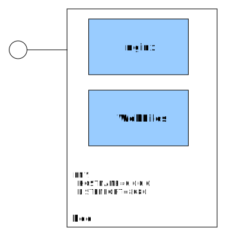

Effective platform building with Kubernetes.
Is K8S new Linux?
Wojciech Barczynski - SMACC.io | Hypatos.ai
Wrzesień 2018
Wojciech Barczyński
- Lead Software Engineer
& System Engineer - Interests:
working software - Hobby:
teaching software engineering
Background
- ML FinTech ➡ micro-services and k8s
- Before:
1 z 10 Indonesian mobile e-commerce (Rocket Internet) - Spent 3.5y with Openstack, 1000+ nodes, 21 data centers
- I do not like INFRA :D
Story
- Lyke - [12.2016 - 07.2017]
- SMACC - [10.2017 - present]
Kubernetes
Why?
- Admistracja jest trudna i kosztowna
- Virtualne Maszyny, ansible, salt, etc.
- Za dużo ruchomych części
- Nie kończąca się standaryzacja
Mikroserwisy AAA!

Why?
- Cloud is not so cheap - $$$
Imagine
- do not need to think about IaaS
- no login on a VM
- less gold plating your CI / CD ...
- DC as a black box
Kubernetes
- Container management
- Service and application mindset
- Simple Semantic*
- Independent from IaaS provider
Kubernetes
- Batteries for your 12factory apps
- Service discovery, meta-data support
- Utilize resources to nearly 100%
Kubernetes

make docker_push; kubectl create -f app-srv-dpl.yaml
Scale up! Scale down!

kubectl --replicas=3 -f app-srv-dpl.yaml
Scale up! Scale down!

kubectl --replicas=1 -f app-srv-dpl.yaml
How get user requests?
 Ingress Controller
Ingress Controller
Load Balancing

Lyke
- E-commerce
- Mobile-only
- 50k+ users
- 2M downloads
- Top 10 Fashion Apps
w Google Play Store
 http://www.news.getlyke.com/single-post/2016/12/02/Introducing-the-New-Beautiful-LYKE
http://www.news.getlyke.com/single-post/2016/12/02/Introducing-the-New-Beautiful-LYKE
Now JollyChic Indonesia
Good parts
- Fast Growth
- A/B Testing
- Data-driven
- Product Manager,
UI Designer,
Mobile Dev,
and tester - one body


Monitor legacy with new stack

Story
- Legacy on AWS, experiments with AWS ECS :/
- Self-hosted K8S on ProfitBricks
- Get to Microsoft ScaleUp, welcome Azure
- Luckily - AKS
Azure Kubernetes Service
- Independent from IaaS
- Our OnPrem = Our OnCloud
- Consolidation of our micro-services
- Plug and play, e.g., monitoring
Simplicity
- az aks CLI for setting k8s - README.rst
- Terraform for everything else
- 1Password and gopass.pw
TF also sets our AWS
Difference ☠
- Two teams in Berlin and Warsaw
- Me in Warsaw
Repo .travis.yml
language: go
go:
- '1.10'
services:
- docker
install:
- curl -sL https://${GITHUB_TOKEN}@raw.githubusercontent.com/smaccio/smacc-ci/master/prerequisites.sh | bash
- if [ -f "tools/travis/install.sh" ]; then bash tools/travis/install.sh; fi;
script:
- dep ensure
- make lint
- make test
- if [ -z "${TRAVIS_TAG}" ]; then make snapshot; fi;
deploy:
- provider: script
script: make release # goreleaser
skip_cleanup: true # so we do not get rid of vendor/
on:
tags: true
all_branches: true
condition: "$TRAVIS_TAG =~ ^v.*"
- provider: script
script: curl -sL https://${GITHUB_TOKEN}@raw.githubusercontent.com/smaccio/smacc-ci/master/deploy.sh | bash
skip_cleanup: true
on:
tags: true
all_branches: true
condition: "$TRAVIS_TAG =~ ^v.*"
notifications:
slack:
rooms:
- smaccio:PLAIN_TEXT_HASHMakefile
|- tools
| |- Makefile
| |- kube-service.yaml
| \- kube-deployment.yaml
|
|- Dockerfile
\- MakefileContinuous Deployment
- Github
- TravisCI
- hub.docker.com
- AKS
Process
git tagand push
Process
- Generate deploy, ingress, and svc kubernetes files
- Commit to smacc-platform.git on staging branch
- Deploy to staging environment
Process
- Create PR in smacc-platform.git for production branch
- On merge, deploy to production
smacc-platform
- 3 independent branches: dev, staging, and master
- Target for other scripts
Kubernetes
- Pure, generated, kubernetes config
- 2x kubernetes operators
What worked
- Hiding k8s
- Go for ubuntu-based docker images
Would do different
- More sensitive to feedback
Next
- Acceptance tests on every deployment
- Scale our ML trainings on the top of k8s
- Deployment tool based on missy
- Keeping an eye on Istio
K8S - Linux
- Kubernetes not a silver bullet, but damn close
- Common runtime for onPrem and onCloud
- The biggest asset - the API
- With service discovery - an integration platform
- With kubevirt - might replace your Openstack
Dziękuję. Pytania?
ps. We are hiring.
Backup Slides
Hiring
- Senior Polyglot Software Engineers
- Experienced System Engineers
- Front-end Engineers
- 1 Data-Driven Product Manager
Apply: hello-warsaw@smacc.io,
Questions? wojciech.barczynski@smacc.io, FB or LI
We will teach you Go if needed. No k8s or ML, we will take care of that.
0.1 ➡ 1.0
Kubernetes Concepts


Pods
- See each other on localhost
- Live and die together
- Can expose multiple ports

Side-cars

Basic Concepts
| Name | Purpose | |
|---|---|---|
| Service | Interface | Entry point (Service Name) |
| Deployment | Factory | How many pods, which pods |
| Pod | Implementation | 1+ docker running |
Rolling Release with Deployments

Also possible